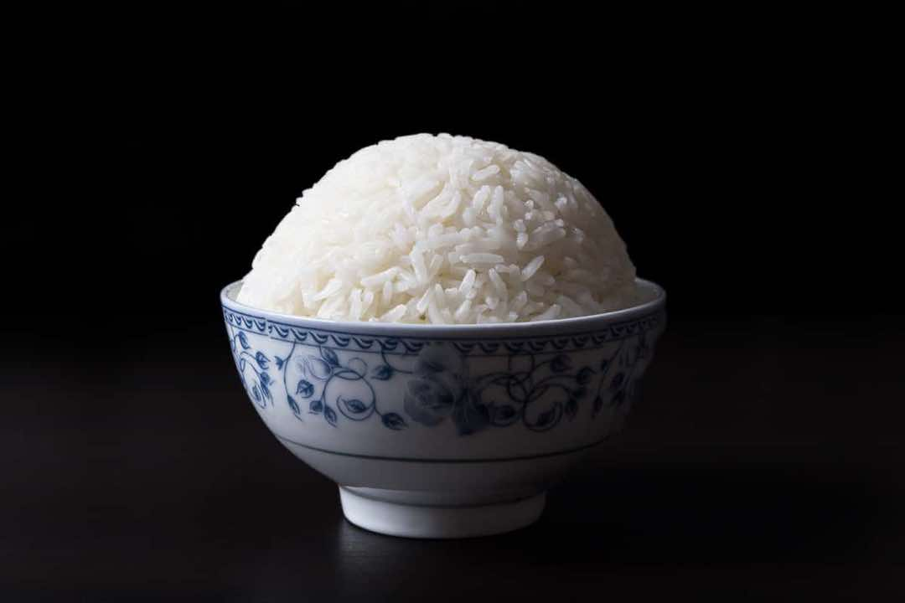

Perfect Instant Pot Rice
Insta potRice
Servings2 - 4
PrepPT0S
CookPT15M

Ingredients
- 1 cup (230g) Jasmine rice
- 1 cup (250ml) cold water
- ¼ - ½ teaspoon fine sea salt or table salt (optional)
Directions
- Rinse Rice: Rinse rice under cold water by gently scrubbing the rice with your fingertips in a circling motion. Pour out the milky water, and continue to rinse until water is clear. Be sure to drain really well.
- Pressure Cook Rice: Add 1 cup (230g) rice and 1 cup (250ml) cold water in Instant Pot Pressure Cooker. Close the lid, turn Venting Knob to Sealing Position. Pressure Cook at High Pressure for 3 minutes, then Natural Release for 10 minutes. Turn Venting Knob to Venting position to release the remaining pressure. Open the lid quickly.
- Optional Seasoning: Add salt to the rice for seasoning.
- Fluff & Serve: Fluff rice with a fork, then serve warm. Enjoy~
Source
https://www.pressurecookrecipes.com/instant-pot-rice/
This page includes Schema.org Recipe structured data for recipe importers.